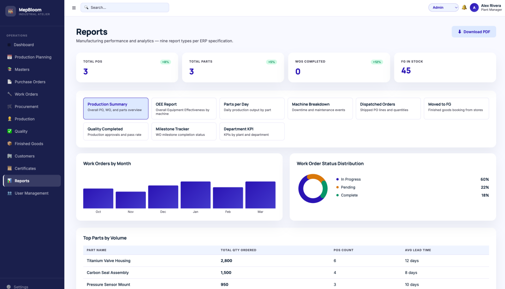
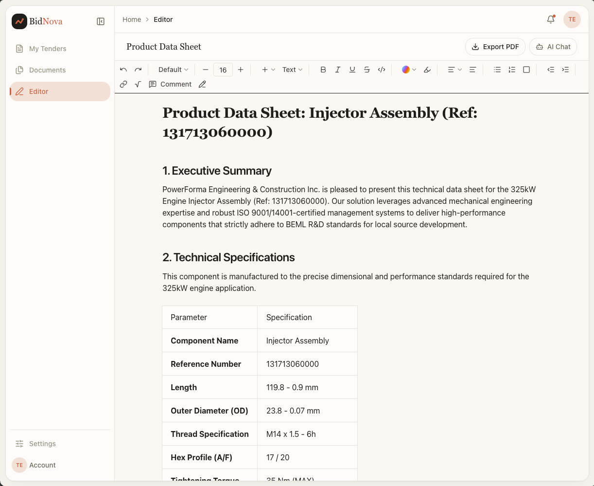

The AI-native backbone
for modern manufacturing.
Three intelligent products. One platform for the factory floor — fast, reliable, and built with AI at the core.
Legacy ERP, or an AI-native platform.
The old way still runs most factories. There is now a faster one.
One platform for the smart factory.
Three products that run, win, and watch your operation — with AI woven through each one.
Apratim Factory
End-to-end FactoryOS for mechanical & aerospace manufacturers.

Everything the floor runs on, in one system.

Apratim Bid
AI-powered search for government tenders — built for the mechanical industry.

From tender alert to ready proposal — in three AI steps.

Apratim Vision
Vision AI for factory automation — on the CCTV you already own.

Eyes on every corner of the floor.
Detection models running out of the box — turning passive footage into decisions.
AI runs through every product.
Not a chatbot bolted to the side — intelligence built into the core of each workflow.
New company. No legacy baggage.
Being new is the edge — AI-native from day one, purpose-built for your industry.
Let's bring AI to
your factory floor.
Book a walkthrough of Apratim Factory, Apratim Bid and Apratim Vision — and a pilot for your plant.